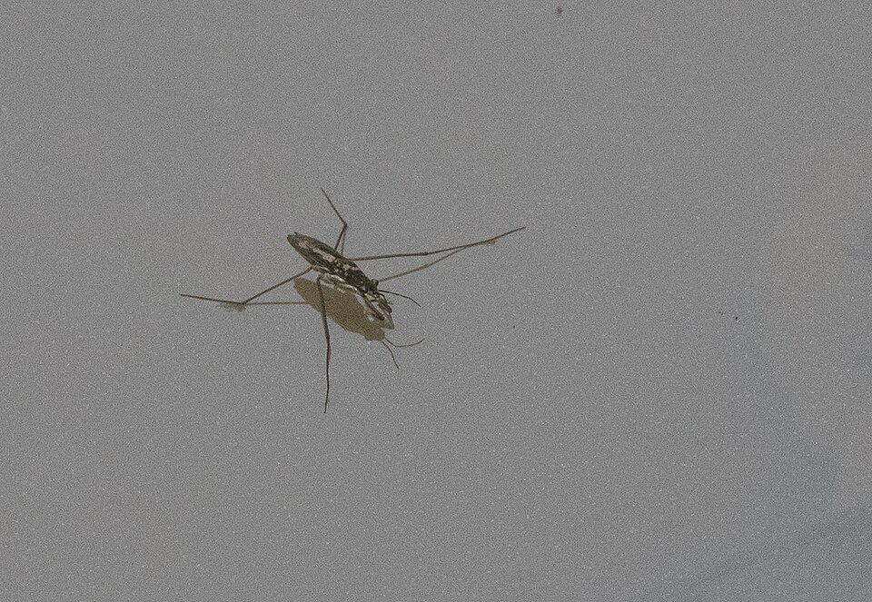

Una membrana invisible que sostiene insectos y agujas, y que hace que las gotas sean redondas
Una aguja de acero es más densa que el agua y, sin embargo, si la apoyás con cuidado, se queda sobre la superficie. Un insecto camina sobre un estanque como si fuera un trampolín. Una gota que cae es redonda. Las tres cosas tienen la misma explicación: la superficie de un líquido se comporta como una membrana estirada. Esa propiedad se llama tensión superficial.
Las moléculas de un líquido se atraen entre sí. Según OpenStax, esas atracciones entre moléculas iguales se llaman fuerzas de cohesión, y las que hay entre moléculas distintas, por ejemplo entre el agua y el vidrio, fuerzas de adhesión [1]. Una molécula en el interior del líquido tiene vecinas por todos lados, y las atracciones se compensan: la fuerza neta es cero. Una molécula en la superficie tiene vecinas solo de un lado, y queda tirada hacia adentro [1]. El resultado es que la superficie tiende a achicarse lo más posible [1].
John Bush, del MIT, lo cuenta en términos de energía: una molécula en la superficie tiene menos vecinas que una del interior, así que le falta parte de su energía de cohesión, y la tensión superficial mide justamente esa energía que se pierde por unidad de área [2]. Por eso la tensión superficial se puede expresar de dos maneras equivalentes: como una fuerza por unidad de longitud o como una energía por unidad de área [2].
OpenStax da una tabla con valores a 20 °C, salvo indicación [1]:
El agua tiene una tensión superficial alta comparada con el alcohol o el aceite, el mercurio la tiene seis veces mayor que el agua, y el jabón la baja casi a la mitad. La tensión del agua también baja al calentarla [1].
El trampolín: OpenStax usa esta imagen: un insecto camina sobre el agua como nosotros caminaríamos sobre un trampolín, hundiendo un poco la superficie [1]. La aguja tampoco flota en el sentido de Arquímedes: es más densa que el agua y se hundiría. La sostienen las fuerzas de la superficie estirada, que intentan volver a dejarla plana. Si la apoyás de punta, su peso se concentra en un área chica, rompe la superficie y se hunde [1].

Como la superficie tiende a achicarse, una gota toma la forma que tiene la menor superficie posible para su volumen: la esfera. La tensión superficial es la razón de que los líquidos formen gotas y burbujas [1]. Esa misma tensión aprieta el interior: dentro de una gota o de una burbuja la presión es mayor que afuera, y cuanto más chica es, mayor es la diferencia [2]. Para una gota con una sola superficie, Bush la escribe así [2]:
Bush lo ilustra con el champán: sus burbujas, de una décima de milímetro de radio, tienen una sobrepresión de alrededor de una centésima de atmósfera [2]. Una burbuja de jabón tiene dos superficies, y su sobrepresión es el doble; ese caso se cuenta en las pompas de jabón.
¿Por qué una gota chica es redonda y un charco es plano? Porque compiten la tensión superficial, que redondea, y la gravedad, que aplasta. Según Bush, las dos son comparables a una escala llamada longitud capilar, que para el agua es de unos 2 milímetros [2]:
Por debajo de esa escala domina la tensión superficial; por encima, la gravedad [2]. Por eso las gotas más chicas que ℓc quedan casi esféricas, y las más grandes se aplastan en charcos de unos pocos milímetros de espesor [2]. Bush también usa esta idea para explicar por qué las gotas de lluvia no pueden ser mucho más grandes que unos milímetros: más allá, el aire las rompe [2].
Una historia larga: Bush recuerda que Herón de Alejandría ya aprovechaba la capilaridad en sus inventos, que Leonardo da Vinci registró el ascenso capilar en sus cuadernos, que Pierre-Simon Laplace dio la descripción teórica del menisco (de ahí el nombre de «presión de Laplace») y que Thomas Young describió cómo un líquido moja un sólido [2]. Cómo sube un líquido por un tubo fino es el tema de la capilaridad; cómo se apoya una gota sobre un sólido, el del menisco y la mojabilidad.
La tensión superficial nace de algo muy simple: las moléculas de la superficie tienen menos vecinas que las del interior. De ahí salen la aguja que se queda sobre el agua, la gota redonda, la presión dentro de una burbuja y una escala, la longitud capilar, por debajo de la cual la superficie le gana a la gravedad. En el mundo de los insectos, las gotas y los poros, la tensión superficial es la fuerza que manda.
Pregunta para la comunidad: OpenStax propone un experimento casero: poné un lazo de hilo flotando sobre agua quieta y dejá caer una gota de detergente adentro del lazo [1]. ¿Qué forma creés que toma el hilo, y por qué? Pista: el detergente baja la tensión superficial solo adentro del lazo.